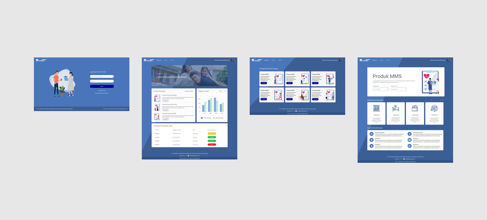
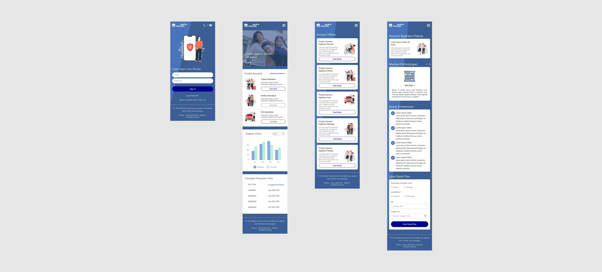
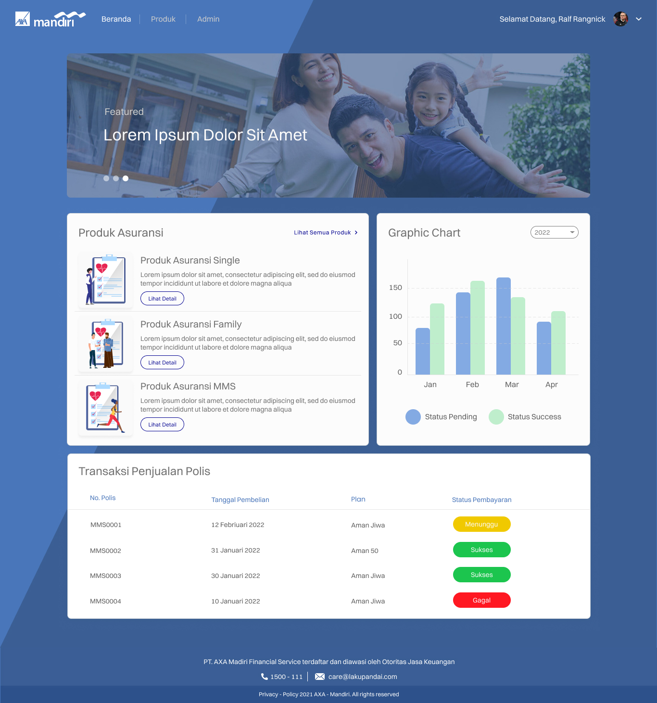
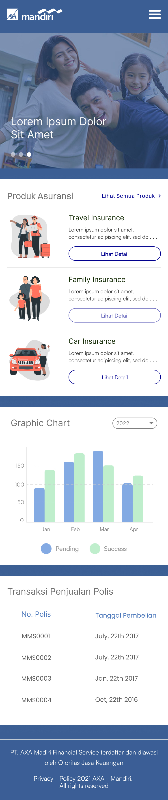
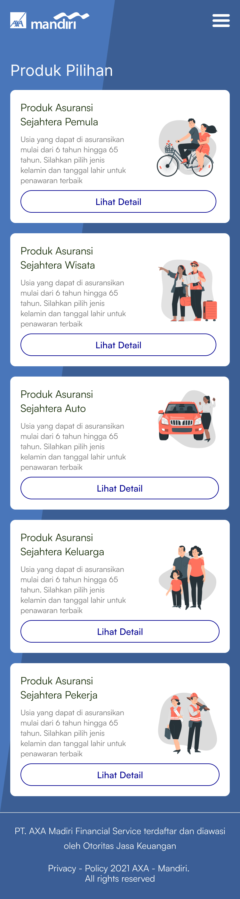
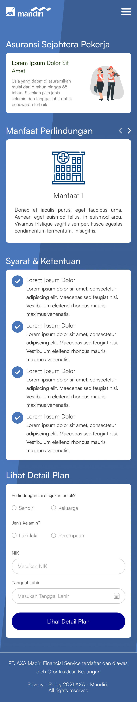

Design Layout Exploration
Explores layout variations and screen compositions to structure content, prioritize information, and ensure consistency across the interface.


×

This project explores the design of a digital dashboard interface for AXA Mandiri’s Laku Pandai platform, covering both desktop and mobile experiences.
The focus is on structuring complex information into a clear and usable layout, ensuring users can navigate products, understand data, and access key actions efficiently within a data-driven environment.
Explores layout variations and screen compositions to structure content, prioritize information, and ensure consistency across the interface.


Combines product listings, analytics, and transaction data into a structured dashboard for efficient monitoring and decision-making.

Transforms the experience into a vertical, card-based flow with guided forms for faster navigation and input on smaller screens.



The interface is designed with a focus on clarity and consistency, using a structured layout system
to organize content and reduce cognitive load.
A modular card-based approach is applied to ensure scalability across different features, while
maintaining visual consistency between desktop and mobile interfaces.
This project demonstrates the ability to design structured and scalable interfaces for complex systems, focusing on clarity, consistency, and cross-platform usability.